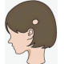

Alopecia Areata
Rx
1.Solution Minoxidil 5% N=1 1c
2.Oint Betamethasone N=1 q12h
+ Amp Triamcinolone 40mg SC
نکته: آلوپسی آره آتا ریزش مو گرد بدون اسکار است.
نکته: بدون درمان نیز ممکنه خودبخود خوب بشه.
نکته: ماینوکسیدین شب قبل از خواب استفاده بشه.
نکته: ماینوکسیدین میتونه حساسیت و پوسته ریزی شده
نکته: تزریق تریامسینولون زیرجلدی در محل ضایعه است که میتونین تکرار کنید. (این درمان موثر تر است)
1️⃣ تریکوتیلومانیا
Tinea capitis 2️⃣
3️⃣ تلوژن افلوویم
4️⃣ آلوپسی آندروژنیک
5️⃣ سیفلیس ثانویه
6️⃣ لوپوس پوستی